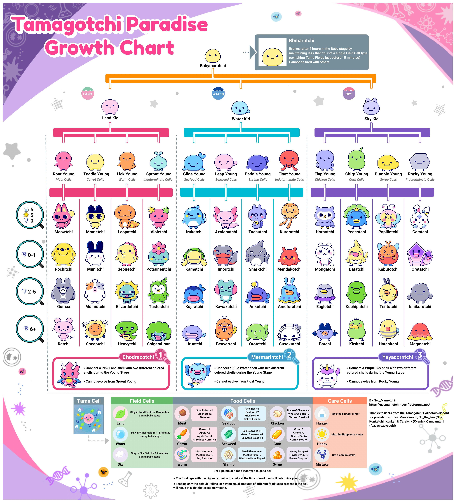
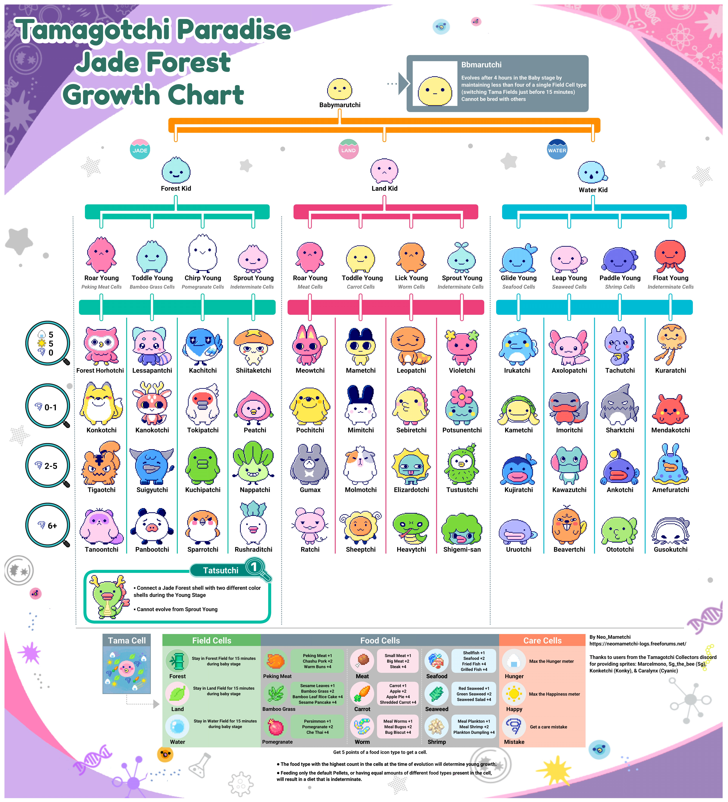
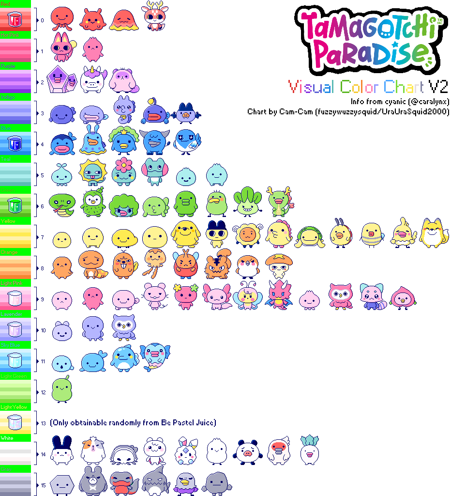

Growth Charts
*Note: The method to get Bbmarutchi in the growth charts is not accurate; scroll down to my FAQ section for more accurate method.Land, Sea, Sky Growth Chart - Credits to@/neomametchi (twitter/x)
(Alternative growth chart here)

Jade Forest Growth Chart - Credits to@/neomametchi (twitter/x)

List of Character Colors

| Color | Obtained from Be Pastel potion? | Obtained from Be Vivid potion? | Obtained from other potions? |
|---|---|---|---|
| Red | Yes | Be Red | |
| Hot Pink | Yes | ||
| Purple | Yes | ||
| Indigo | Yes | ||
| Blue | Yes | Be Blue | |
| Teal | Yes | ||
| Green | Yes | Be Green | |
| Yellow | Yes | ||
| Orange | Yes | Yes | |
| Light Pink | Yes | Be Pink | |
| Lavender | Yes | Be Purple | |
| Sky Blue | Yes | Yes | Be Sky Blue |
| Light Green | Yes | ||
| Light Yellow | Yes | ||
| White | Yes | ||
| Grey | Yes |
Official User Manual
Taken from Tamagotchi official website
Tamagotchi Paradise Customization Guide
A step by step guide on how to open up your Tamagotchi Paradise and swap the shell
Faceplate Template (png) or Faceplate Template (svg)
List of codes
Or here, by Tamagotchi Center
- To enter a Lab Sticker code, go to Tamagotchi Lab (long press the dial) → Lab Log → Microscope → Lab Code.
- To enter a Store Code, go to Tamagotchi Lab (long press the dial) → Shop → Shop Code.
Progress Tracker Checklists
I created some checklist templates on Notion that you can use to easily track your Tama Paradise progress by installing the Notion app on your desktop or mobile devices.
How to use: You will need a Notion account for this. Click on the "duplicate" icon on the top right of the screen (circled in red below) and and save it to your own workspace.

- First tab: The main checklist grouped by Field Type, but you can use the other columns to create your own custom filters and sorting.
- Second tab: Shows % progress.
- Third tab: Shows the list of food to feed your Kid stage tama for each category.
Mission Checklist download link: Checklist to track which missions you have achieved on your Tama Paradise
Tama Colors download link: Checklist to track the color of tamas you have obtained before. Get all colors to complete Mission #22
Frequently Asked Questions
What is the best way to increase my Tamagotchi's happiness level?
Your Tamagotchi’s happiness meter has 20 bars. You can raise its happiness in two ways:- Feeding Snacks: Each snack increases happiness by +1 bar.
- Playing Games:
- Arrow Game: Win for +5 bars; lose for +1 bar.
- Flag Game: Win with zero mistakes for +10 bars. Least efficient game; not recommended. Time consuming, frustrating, and easy to mess up.
- UFO Game: Win with zero mistakes for +10 bars; mistakes still give a smaller boost.
- Walking Game: Win with zero mistakes for +10 bars; mistakes still give a smaller boost.
Note: The Walking game is more challenging and has a higher chance of losing, while the UFO game is almost a guaranteed win. Personally, I prefer the Walking game because it’s more engaging and fun, but if you want an easy, guaranteed win, go with the UFO game.
How to level up my planet fast?
Starting at Level 6, leveling up your planet requires raising your Tamagotchi to adult stage once for each level you advance. Since evolving from baby to adult takes a few days, reaching Level 10 normally takes over a week, but there’s a shortcut that lets you breeze through Levels 6 to 10 in just 1-2 days!This is done by evolving Babymarutchi into Bbmarutchi. While you have Babymarutchi, switch Tama Fields every 12-14 minutes (but NO MORE THAN 15 mins) to avoid gaining Field Cells. Repeat this for 4 hours. At the end of 4 hours,you should ideally have zero Field Cells, but if you occasionally accidentally exceeded 15 mins, having a few Field Cells is okay as long as not up to 4 of the same kind. Your Babymarutchi will then evolve to Bbmarutchi, which looks the same but is larger.
Since Bbmarutchi counts as an adult, you get from baby to adult stage much faster: in just 4 hours instead of the usual couple of days. Then, visit Tama Lab for a new egg and repeat. Note that Bbmarutchi cannot breed, so you have to let it go to the field or let it die for the new egg.
Is there an easier way to get Bbmarutchi?
Yes! Instead of changing fields every 14 minutes, there is an easier way which is to semi-ignore it: After 35 minutes (right after the nap) of hatching, switch fields once, then ignore your Babymarutchi completely. At the 4-hour mark, it will evolve into Bbmarutchi.If you want to know the logic behind it, I explain it in very technical detail here.
How to collect food (rice ball) icons and happiness (sun) icons fast?
You earn 1 food icon each time you fill the hunger bar to its maximum, and 1 happiness icon each time you fill the happiness bar to its maximum. It doesn’t matter whether you fill it from empty or just from 90% to full — as long as it reaches the max, you’ll get the icon.To collect icons faster, don’t wait until the bar is empty. As soon as it drops by even one notch, fill it back up to max again — you’ll earn another icon each time.